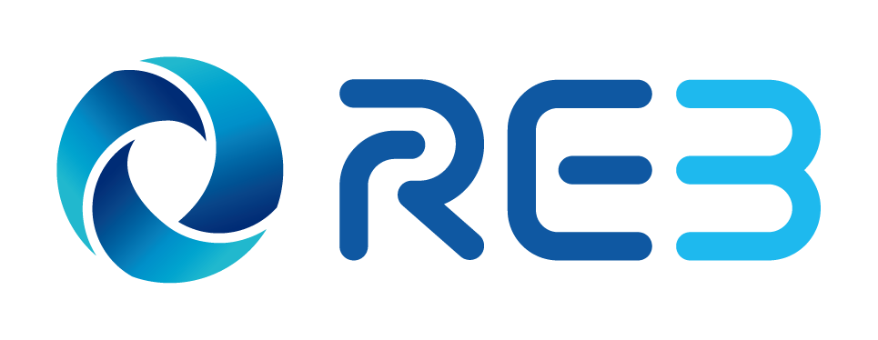

Prompt Conversion
모두의 부동산 보고서
과거 우수 보고서의 형식, 문체, 논리 구조를 AI가 분석하고, 사용자가 입력한 지역·자료·이슈·수치·사례를 그 형식에 맞게 재구성할 수 있도록 최적화된 AI 변환 프롬프트를 생성합니다.

일반적으로 뉴스 기사 링크나 유튜브 영상 링크를 입력하세요. AI가 링크의 제목·본문·자막·핵심 단어·주요 내용을 분석해 보고서에 녹일 수 있도록 프롬프트에 반영됩니다.
방향성 미입력: 보합 또는 별도 판단 필요
AI가 참고할 보고서의 목차, 문체, 문단 흐름, 결론 도출 방식을 붙여넣으세요.
참고 보고서 1
과거 보고서 저장소
저장된 보고서는 현재 브라우저에만 보관됩니다. 브라우저 데이터 삭제 시 함께 삭제될 수 있습니다.
폴더별 최대 50개, 전체 최대 500개까지 저장할 수 있습니다.
AI 실행 단계
아래 버튼을 누르면 AI 변환 프롬프트가 화면에 표시되지 않고 자동으로 복사됩니다. 복사된 프롬프트를 ChatGPT 또는 Gemini에 붙여넣고 실행하세요.
아직 프롬프트가 복사되지 않았습니다.
사용 방법
- 왼쪽 입력란에 보고서 재료를 입력합니다.
- 왼쪽 하단의 [복사 후 ChatGPT 열기] 또는 [복사 후 Gemini 열기]를 누릅니다.
- 열린 AI 채팅창에 붙여넣기 후 실행합니다.
- AI가 생성한 보고서 초안을 아래 칸에 붙여넣습니다.
- 수치, 표현, 문장, 오탈자 등을 사람이 직접 수정합니다.
- 필요하면 [글자수 조정 AI 최종 조정]에서 분량 조정 프롬프트를 복사해 다시 AI에 실행합니다.
- 최종 수정이 끝난 보고서를 [최종 보고서 붙여넣기] 칸에 붙여넣습니다.
- [최종 보고서 복사]를 누르면 최종본 전체가 복사됩니다.
분량 비율 조정 AI 최종 조정
보고서 초안을 기준으로 원문 대비 목표 비율에 맞춰 줄이거나 늘리는 편집 프롬프트를 생성합니다. 글자 수 기준 선택은 제거하고, 퍼센트·배수·분수·범위 중 하나로 목표 분량을 지정합니다.
퍼센트 모드: 50 또는 150처럼 입력하면 원문 대비 50% 또는 150%로 조정합니다.
아직 글자수 조정 프롬프트가 복사되지 않았습니다.